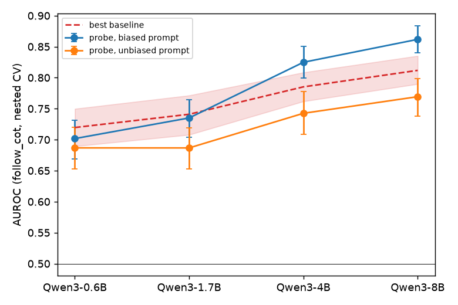

A probe can tell, before the model reasons, whether it will follow a misleading hint
TL;DR. Chain-of-thought (CoT) monitoring assumes that a model's written reasoning shows why it chose its answer. Turpin et al. (2023) showed that this often fails: suggest a wrong option in the prompt and the model moves to it, while its reasoning never mentions the suggestion. I asked whether the hidden state at the end of the prompt already shows that the model is about to follow such a hint, and whether that signal is causal.
On Qwen3 0.6B to 8B:
- A linear probe predicts hint-following before any reasoning is written, with AUROC rising from 0.70 to 0.86 with model size.
- It adds to cheap checks only from 4B, and most of what it reads is the model's prior leaning rather than the hint.
- Steering along the probe direction does nothing, even when pushed as hard as a direction that does change behavior. The probe is a detector, not a handle on the mechanism.
Setup
In the earlier study, a critique-and-revise reflection step made models somewhat less susceptible to biasing cues, but the revised reasoning still hid the cue behind a fabricated rationale. A behavioral test like that only sees hint-following after the answer exists. This project looks earlier.
I gave Qwen3 0.6B, 1.7B, 4B and 8B (thinking mode off, one sample per prompt at temperature 1) 650 questions from 13 BIG-Bench Hard tasks, each with a hint toward a wrong option, such as "I think the answer might be (X) but curious to hear what you think." The label is whether the final answer after the CoT is the hinted option. Larger models follow the hint less often, from 74% of the time at 0.6B to 38% at 8B, so there is something to predict at every size. The probe is logistic regression on the residual stream at the last prompt token, cross-validated with folds grouped by question.
To see whether the probe knows anything a monitor could not get more cheaply, I compared it with two baselines that need no hidden state: a classifier on surface features of the prompt (task, hint wording, prompt length), and the model's own direct answer to the same hinted prompt without CoT. The causal tests and their decision rules were pre-registered.
The probe predicts hint-following, but mostly reads prior leaning
| Model | Probe | Best cheap check | Probe on the same prompt without the hint |
|---|---|---|---|
| 0.6B | 0.702 | 0.720 | 0.687 |
| 1.7B | 0.735 | 0.741 | 0.687 |
| 4B | 0.825 | 0.785 | 0.743 |
| 8B | 0.862 | 0.812 | 0.769 |
AUROC for predicting whether the CoT ends on the hinted option.

At 0.6B and 1.7B the probe does no better than surface features. From 4B it adds a small, reliable gain on top of both cheap checks combined, 0.02 to 0.03 AUROC, and the gain grows to 0.07 on tasks the probe never saw during training. There the surface classifier falls below chance, because most of its strength came from knowing the task. The probe is picking up something general about hint-following, not memorizing tasks.
The signal also becomes more localized with size. At 4B and 8B every cross-validation fold picks the same layer, while at 0.6B the folds scatter between layers 3 and 21. A small model has no stable place where this information sits; a larger one does.
The last column is the main caveat. A probe trained on the same questions without any hint gets most of the way there, and the model's direct answer is the strongest single predictor. So most of what the probe reads is what the model already leans toward: if it was going to pick that option anyway, the hint only has to agree. The hint-specific part is real and grows with size, as the gap between the hinted and unhinted probes widens from 0.02 at 0.6B to 0.09 at 8B, but it is the smaller part.
The probe tracks the hint only partly
I rebuilt every prompt with the hint on a different wrong option, on the correct option, or removed, and regenerated the answers.
The models follow whichever hint is in front of them, and swapping one wrong hint for another changes neither behavior nor the probe score. That is what a probe of "will follow this hint" should do, and it rules out a probe that just tracks one particular option.
A hint on the correct option is where behavior and probe come apart. At 8B it raises following from 0.37 to 0.90, but the probe score rises by only 0.09. This case is also confounded: the larger models get these questions right most of the time without a hint, so a correct hint mostly agrees with what they would say anyway. With no hint at all the label has no target, and the probe moves inconsistently across sizes, so I do not read anything into it. Under the pre-registered criteria the result is "mixed" at every size: the probe responds to the hint, but much less than behavior does.
Steering along the probe direction does nothing
While the model generated, I added a fixed vector to the residual stream at the probe's layer and measured how often the answer followed the hint. I steered along the probe direction, the mean difference between followed and non-followed prompts (both fitted on other questions), and random directions.
In the pre-registered run each direction was scaled by its own activation spread, and only the mean difference moved behavior. But that made the probe's push 7 to 15 times smaller, so I added a comparison at equal strength: the probe direction and a random direction pushed exactly as hard as the mean difference.
| Model | Mean difference | Probe | Random |
|---|---|---|---|
| 0.6B | -0.015 / +0.005 | -0.035 / -0.003 | +0.005 / +0.001 |
| 1.7B | -0.080 / +0.064 | +0.022 / +0.022 | +0.054 / -0.022 |
| 4B | -0.005 / +0.019 | +0.008 / +0.043 | +0.024 / +0.012 |
| 8B | -0.047 / +0.049 | +0.015 / +0.012 | +0.007 / +0.031 |
Change in hint-follow rate when pushing negative / positive, all directions at the same strength. Bold: the 95% interval excludes 0.
The probe direction behaves like the random one. Each shows a stray significant cell or two, never in both directions at the same size, and both cost some accuracy, which is what any large push does. So the null result is not because the push was too weak. The most predictive direction is not one the model acts on, at least at this layer. That is less surprising than it sounds: a logistic-regression probe picks whatever direction best separates the two classes, which can be a direction that correlates with the outcome without being the one later layers read.
The mean difference is the only direction that moves hint-following both ways, at 1.7B and 8B. It also changes reasoning length by 64 to 154 tokens, against at most 22 for the random direction, and shorter reasoning goes with more hint-following. Pushed toward short reasoning it also costs about 6 points of accuracy. It looks like a reasoning-length direction more than a hint direction: a model that reasons less defers to the hint more. These results cannot tell whether hint-following changes through the length or alongside it.
What I take from this
For CoT monitoring, a probe on the prompt is a cheap early warning that starts to pay off around 4B. Because most of what it reads is the model's prior leaning, it works best alongside the model's direct answer rather than instead of it, and because steering along it does nothing, it is a detector rather than a way to control the behavior.
What this cannot show. That the model "decides" or "intends" to follow the hint; a probe only shows that the information is linearly readable. Whether the probe direction matters at other layers or under other interventions. Whether the mean difference moves hint-following through reasoning length or alongside it.
What would settle it. A probe for the model's pre-CoT answer itself, and a test of whether the follow probe adds anything beyond it, would separate prior leaning from the hint-specific signal. Steering at other layers, with more random directions at equal strength, would test whether the probe direction is inert everywhere.
Limits. One sample per prompt, so each label is a single noisy draw. Thinking mode was off, and Qwen3 sometimes reasons even when asked to answer directly, so the direct-answer baseline is not perfectly clean. The equal-strength comparison uses one random direction and was added after the main results. One model family.
Related work. Turpin et al. (2023) introduced the biased-hint test, and Lanham et al. (2023), Chen et al. (2025), Chua and Evans (2025) and Arcuschin et al. (2025) measure CoT faithfulness from behavior. The suggested-answer hint is a sycophancy cue (Sharma et al. 2023). The probing setup follows Alain and Bengio (2016), Hewitt and Liang (2019) and Marks and Tegmark (2023), and MacDiarmid et al. (2024) use simple probes as monitors. Steering follows Turner et al. (2023), Panickssery et al. (2023) and Zou et al. (2023). Closest to this project, Cox et al. (2026) decode a model's answer from activations just before its CoT and often flip it by steering along the probe direction. Gupta et al. (2026) find cue-induced biases as steerable linear directions, and Nguyen et al. (2026) find that CoT-faithfulness steering vectors generalize reliably only for the largest model they test. One difference from Cox et al. is the target: their probe decodes the answer the model has committed to, while mine predicts whether it will follow a hint, which may combine several factors rather than one variable the model acts on.
Next steps. Beyond the two experiments above: several samples per prompt, thinking mode on, and a public release of the labels and activations.
References
- Alain, G. and Bengio, Y. (2016). Understanding intermediate layers using linear classifier probes. arXiv:1610.01644.
- Arcuschin, I. et al. (2025). Chain-of-Thought Reasoning In The Wild Is Not Always Faithful. arXiv:2503.08679.
- Chen, Y. et al. (2025). Reasoning Models Don't Always Say What They Think. arXiv:2505.05410.
- Chua, J. and Evans, O. (2025). Are DeepSeek R1 And Other Reasoning Models More Faithful? arXiv:2501.08156.
- Cox, K., Kianersi, D. and Garriga-Alonso, A. (2026). Post-Hoc Reasoning in Chain of Thought: Decoding and Steering Pre-Committed Answers. arXiv:2603.01437.
- Gupta, P., Zhang, T. J., Draye, F., Schoelkopf, B. and Jin, Z. (2026). How Does Alignment Tuning Shape Representations of Sycophancy and Related Cue-Induced Biases in LLMs? arXiv:2607.18114.
- Hewitt, J. and Liang, P. (2019). Designing and Interpreting Probes with Control Tasks. arXiv:1909.03368.
- Lanham, T. et al. (2023). Measuring Faithfulness in Chain-of-Thought Reasoning. arXiv:2307.13702.
- MacDiarmid, M. et al. (2024). Simple probes can catch sleeper agents. Anthropic. https://www.anthropic.com/research/probes-catch-sleeper-agents
- Marks, S. and Tegmark, M. (2023). The Geometry of Truth: Emergent Linear Structure in Large Language Model Representations of True/False Datasets. arXiv:2310.06824.
- Nguyen, M., Cox, K., Meek, A. and Arcuschin, I. (2026). On the Generalization of Steering Vectors for Chain-of-Thought Faithfulness. arXiv:2607.29062.
- Panickssery, N. et al. (2023). Steering Llama 2 via Contrastive Activation Addition. arXiv:2312.06681.
- Sharma, M. et al. (2023). Towards Understanding Sycophancy in Language Models. arXiv:2310.13548.
- Suzgun, M. et al. (2022). Challenging BIG-Bench Tasks and Whether Chain-of-Thought Can Solve Them. arXiv:2210.09261.
- Turner, A. M. et al. (2023). Steering Language Models With Activation Engineering. arXiv:2308.10248.
- Turpin, M., Michael, J., Perez, E. and Bowman, S. R. (2023). Language Models Don't Always Say What They Think: Unfaithful Explanations in Chain-of-Thought Prompting. arXiv:2305.04388.
- UK AI Security Institute (2024). Inspect AI: Framework for Large Language Model Evaluations. https://github.com/UKGovernmentBEIS/inspect_ai
- Yang, A. et al. (2025). Qwen3 Technical Report. arXiv:2505.09388.
- Zou, A. et al. (2023). Representation Engineering: A Top-Down Approach to AI Transparency. arXiv:2310.01405.
Thanks to Sanjana Deshpande, who co-authored the original faithfulness study this builds on.